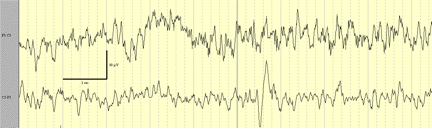
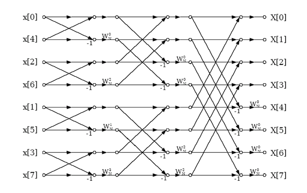

Fourier series: decomposition by frequency¶
Introduction¶
In this part of the course we will turn to areas of mathematics and computation that have applications to data analysis. Depending on the source of the data and the goals of the analyst, one can extract different kinds of information from a data set. There is usually one common goal of data analysis: simplification. It stand to reason, since if the data set were simple, quantitative analysis would be superfluous. Fortunately, there is no shortage of complex, messy data in biology.
At least two kinds of data analysis can be distinguished: extraction of simplified information, and fitting a model to the data. In chapters 13 and 14 we will present the method of Fourier analysis, which extracts information about frequency from a data set, while in chapters 15 and 16 we discuss optimization, which, among many other uses, enables the fitting of models to data sets.
In the modeling section we motivate the notion of frequency analysis with the example of electro-encephalogram recordings of electrical activity of the central nervous system. The analytic section develops the mathematical notion of function spaces, and the basis of sine and cosine functions. This is used for Fourier decomposition, or description of an arbitrary periodic function as a sum of sines and cosines. In the computational section, we describe the computation of Fourier decomposition using an efficient algorithm called the Fast Fourier Transform, which is a seminal development in the history of computation.
Modeling: periodicity and its applications¶
amplitude, period, and frequency¶
Many biological processes are periodic, that is repetitive, with a particular pattern that serves biological needs; common examples are waves of activity in the heart muscle, repeated spikes of voltage across neural membranes, and daily Circadian rhythms in physiological regulation. It is highly useful to measure the properties of these periodic activities, and to describe them using idealized mathematical functions, specifically sines and cosines.
As a reminder sines and cosines both have period \(2\pi\), but the sine is an odd function: \(\sin(x) = -\sin(-x)\), whereas the cosine is an even function: \(\cos(x) = \cos(-x)\). Furthermore, by adding a couple of parameters, one can produce a sine or cosine wave of any period and any amplitude. In the following expression, the amplitude of both the sine and the cosine is \(L\), and thus the frequency is \(1\L\), while the amplitude of the sine is \(A\) and that of the cosine is \(B\). $\(A \cos(2\pi x/L); \; B\sin(2\pi x/L)\)$
brain waves in EEG¶
Of course, not all periodic functions are sines and cosines, but sines and cosines can be used to describe the types of frequencies present in a periodic signal. Consider the following electroencephalograph (EEG) data collected from electrodes on the scalp of a human:

By inspection, it appears as if there are some periodic processes producing these data, but these are not neat periodic sine or cosine waves. Instead, we have many different overlapping signals, produced by huge numbers of electrical pulses in the brain, each with different frequency. In order to analyze this signal, we need to decompose it into contributions of different frequencies. Signals of different frequencies,called brain waves in neuroscience, serve distinct purposes: for instance, different stages of sleep can be characterized by the frequencies of the brain waves. In the following section we will learn how to describe complex, periodic data sets, such as the one in figure [fig:EEG_recording], in terms of the contributions, or amplitudes, of sines and cosines of different frequencies. This way we can quantify the presence of different types of brain waves in a given EEG recording.
Analytical: sines and cosines as a basis set for periodic functions¶
We now introduce the idea of a space of functions, instead of vectors, and describe how to decompose any given function in terms of a basis of other functions. Joseph Fourier postulated in 1822 that any function can be described by an infinite sum of sine functions. Some of the details were incorrect, but he introduced an a revolutionary concept that has found fundamental applications in a multitude of fields of science, from acoustics to medical imaging. The fact is that any function on a finite interval of length \(L\) (or a periodic function with period \(L\), which is equivalent) can be represented exactly by an infinite sum of sines and cosines, plus a constant term: $\(f(x) = a_0 + \sum_{k=1}^\infty a_k \cos(2\pi k x/L) + \sum_{i=1}^\infty b_k \sin(2\pi k x/L)\)\( Notice that this is the same concept of decomposition in terms of a basis set. Any such function can be written as the sum of sines and cosines, and only the coefficients are different for different functions. The main difference is that vector spaces (such as \)\mathbb{R}^3\() have finite basis sets of vectors, while a function space (e.g. the space of all functions with period \)L$) has an infinite basis set of functions (e.g. sines and cosines with different frequencies.) To be specific, let us define these concepts.
A function space is a collection of all functions defined over a given domain, for example the interval \([-L/2, L/2]\), that have a finite norm, to be defined below.
The notion of the norm of a function is similar to the norm, or magnitude of a vector. The reason for restricting function spaces to functions with a finite norm, is to ensure that computations of various quantities of interests are valid and do not blow up. Now let us define the function norm:
The norm of a function \(f(x)\), denoted \(||f||\), is a mapping from the function space into nonnegative real numbers, which obeys the following rules:
\(||f|| = 0\) iff \(f(x) = 0\) (the function is zero everywhere)
\(||af|| = a||f||\) for any real number \(a\)
\(|| f+g || \leq ||f|| + ||g||\) for any functions \(f\) and \(g\) in the function space (triangle inequality)
The norm that we will utilize in the function spaces is called the \(L^2\) norm and it is defined as follows:
The \(L^2\) norm of a real-valued function \(f(x)\) over an interval \([-L/2,L/2]\) is defined as follows: $\(||f|| =\sqrt{ \int_{-L/2}^{L/2} f(x)^2 dx}\)$
The \(L^2\) norm in function spaces is the square root of the integral of the square of the function values over the interval of its definition (which can be extended to the entire real number line, in the limit of \(L \to \infty\)). This is the equivalent of the Euclidean distance norm in vector spaces, which if you recall is the square root of the sum of squares of all the components of the vector. There are many possible norms of function spaces, but the \(L^2\) norm is mathematically special, because it is derived from the inner product of the function space:
The inner product between two functions \(f\) and \(g\) defined on the same interval \([-L/2,L/2]\) is: $\(<f, g> = \int_{-L/2}^{L/2} f(x)g(x) dx\)$
The function norm can be defined in terms of the inner product: \(||f(x)|| = \sqrt{<f(x), f(x)>}\). This defines the machinery for computing the “size” of a function, measured by its norm, as well as the “similarity” between two functions, measured by the inner product. If two functions \(f\) and \(g\) are very similar, the inner product is close to the square of the norm of \(f\) (or \(g\)). If \(f\) and \(g\) are very similar, but flipped by a negative sign, the inner product is close to negative of the square of the norm of \(f\) (or \(g\)). On the other hand, if the two functions are dissimilar - loosely speaking, if \(f\) is positive, \(g\) is sometimes positive, sometimes negative, then the product of the values of \(f\) and \(g\) is sometimes positive and sometimes negative, and thus its integral will add to be close to zero. This is how one can define orthogonality of two functions:
Two functions \(f\) and \(g\) in a function space are orthogonal if \(<f,g> = 0\).
Now that we can describe the coefficients for the sines are cosines, by using the inner product of the function we are decomposing, with the basis functions (sines and cosines) in a manner analogous to the basis decomposition described for vector spaces in Chapter 8. The coefficients for the sines and cosines of the Fourier decomposition of a function \(f(x)\) with period \(L\) are found as follows: $\(a_k = \frac{ <f(x),\cos(2\pi k x/L) > }{ <\cos(2\pi k x/L) ,\cos(2\pi k x/L) >} =\frac{2}{L} \int _{-\frac{L}{2}} ^{\frac{L}{2}} f(x) \cos(2\pi k x/L) dx\)$
The coefficients for the cosines are zeros, but there are nonzero values for the sines, when \(k\) is odd, and \(\cos(\pi k) = -1\). When \(k\) is even, \(\cos(\pi k) = 1\), and the expression reduces to 0. Thus, the Fourier series representing the square wave with period \(L\) looks like this: $\(f(x) = \frac{4}{\pi}\sin(2 \pi x/ L) + \frac{4}{3\pi}\sin(2 \pi 3 x/ L) + \frac{4}{5\pi}\sin(2 \pi 5 x/ L) + ...\)$ Notice how the coefficients decline for higher frequency terms. This means that one can take a finite, often just a handful of lowest-frequency terms and have a decent approximation of the function. This is typical for most reasonable functions, as we will discuss below.
complex Fourier series¶
We have seen that periodic functions can be approximated by a sum of sines and/or cosines of different frequencies, which is called the Fourier series. Because both sines and cosines are needed to represent a function that is not purely odd or even, a more compact complex representation of the Fourier series is used: $\(f(x) = \sum_{n=-\infty}^\infty c_k e^{i2\pi x k/L}\)\( Here \)L\( denotes the length of the period of the function \)f(x)\(, and \)c_n\( are the complex coefficients of the Fourier series, each corresponding to the frequency \)n/L$. They are found by the same integration as the ones for sine and cosines series:
The coefficient \(c_0\), as can be seen from the integral, is the average value of \(f(x)\) on the interval \([-L/2,L/2]\).
In the complex Fourier series, positive and negative frequencies are used in order to combine both sines and cosines into the same series, by using the expressions \(e^{i2\pi x k/L} + e^{- i2\pi x k/L} = 2\cos(\pi x n/L)\) and \(e^{i2\pi x n/L} - e^{- i2\pi x n/L} = 2i\sin(2\pi x n/L)\). Thus, the complex coefficients \(c_n\) are related to the coefficients \(a_k\) and \(b_k\) of the cosine and sine series as follows: $\(c_k = \frac{a_k -ib_k}{2}; \; c_{-k} = \frac{a_k + ib_k}{2}; \; k \geq 1\)\( Note that as long as \)a_n\( and \)b_n\( are real (which is the same as saying the function \)f(x)$ is real) the coefficients with opposite signs will be complex conjugates of each other.
Sampling theorem and aliasing¶
By representing a periodic function \(f(x)\) in terms of the Fourier series, we reduce its description to the values of the coefficients \(c_k\). We say that this set of coefficients is a representation in the frequency domain as opposed to the time or space domain of the original variable \(x\). This is very useful for analyzing the types of frequencies that a function contains.
To elaborate, \(c_k\) gives the weight of the sine or the cosine function with frequency \(k\), that is, one which has \(k\) repetitions within the period \(L\). Higher frequency terms are more wiggly, and are needed to represent functions with high slopes. Lower frequency terms represent the larger, slower varying shape of the function. For any reasonable function, the higher frequency terms will generally have smaller coefficients than lower-frequency terms, and for really high frequencies will be very small. This enables one simple use of the Fourier series: a periodic function can be approximated by a few lower-frequency terms, so it can be represented by a few numbers. This has great applications in image and sound compression.
The highest frequency possibly in a sample of \(N\) data points is called the Nyquist critical frequency \(f_c\). It depends on the sampling interval \(\Delta\) like this: \(f_c = 1/2\Delta\). The intuition behind this is that in order to detect a frequency \(f\), one needs to make at least two measurements during one period \(1/f_c\). (Convince yourself of this by drawing a sine wave and sampling it two or fewer times per period.) Since each measurement takes \(\Delta\) units, the highest frequency we can sample is \(1/2\Delta\). This leads to a remarkable result, called the Sampling Theorem:
Theorem: If a function \(h(x)\) contains no higher frequencies than some \(f_c\), more precisely its Fourier transform \(\hat h(f) = 0\) for any \(f>f_c\), then this function can be completely represented by a sample with the interval \(\Delta\) such that \(\Delta < 1/2f_c\).
Practically, this means that any function that does not change too abruptly (which requires higher frequency terms) can be represented by a discrete set of low-frequency terms. However, in practice there is always noise or abrupt changes, so one cannot have what is known a bandwidth limit (meaning the band of frequencies contributing to the function is limited). Then, when we try to represent a function with a discrete set of points that we Fourier-transform, when we perform the inverse FT, we get error due to lack of the high-frequency terms. This is called aliasing error.
Discrete Fourier Transform¶
Now let us consider a series of data points, instead of idealized functions, since in reality the data are never described by perfect continuous functions. Let us suppose that they come from measuring a certain function \(f(x)\) over a range of length \(L\) at regular intervals. This is called sampling of the function and the sampling interval (in units of \(x\)) between the sample points is called \(\Delta = L/N\), where \(N\) is the number of sample points. As a result, we get a sequence of \(N\) measurements \(\{x_i\}\). In order to decompose the sampled inputs into their frequency components, we need to find the coefficients of the Fourier series. Let us use the notation \(\{X_k\}\) for the Fourier coefficients, and define the following the Discrete Fourier Transform: $\(X_{k} = \sum_{n=0}^{N-1} x_{n} e^{-i 2\pi kn /N} \label{eq:dft}\)\( It is called the Discrete Fourier Transform because it is based on the finite data set, and thus computation of coefficients requires summation instead of integration. Let us consider what frequency each coefficient \)X_k\( corresponds to. When \)k=0\(, \)e^0=1\( and we just have the sum of all the sample points. This is called the zero frequency term, or sometimes the DC (direct current) term by electrical engineers. The other terms have frequencies given by \)k/N\(, all the way up to \)(N-1)/N\(. Note here that we assume for convenience that the interval \)\Delta\( is 1, so the frequency corresponds to the fraction of points in the cycle (e.g. \)k/N\(). The frequency ranges from the lowest of \)1/N\( to the highest of \)(N-1)/N\(. However, the highest frequency is actually equivalent to \)-1/N\(, because going around the \)(N-1)/N\( fraction of a circle in one direction is the same as going \)1/N$ fraction in the opposite direction.
Thus, the first half of the coefficients correspond to positive frequencies in increasing order, until the frequency \(1/2\) is reached, and then the coefficients correspond to negative frequencies in descending order of the absolute value. In fact, if the input points are real, the coefficients of positive and negative frequencies are symmetric, and so for the MATLAB indexing above, we have: \(C(k+1) = C(N-k+1)\) (for \(k>0\)). This is because the complex terms have to add up to real numbers, so this ensures that terms with opposite frequencies are complex conjugates (convince yourself of this fact).
Computational: Fast Fourier Transform¶
Now let us get down to the business of computing the Fourier decomposition of an input of \(N\) data points. In equation [eq:dft] in the discrete Fourier transform section, we found an analytic formula for finding the coefficients of a complex Fourier series by summation of \(N\) components. In order to obtain all \(N\) Fourier coefficients, we would need to perform approximately \(N^2\) operations (\(N\) multiplications plus \(N-1\) additions for each of the \(N\) coefficients). This means that as the number of inputs grows, the computational cost of performing the Discrete Fourier Transform grows quadratically. This is a major problem because Discrete Fourier Transforms are so ubiquitous - they are at the heart of graphics engines, audio and image analysis, and many other computationally intensive applications. In this section we will describe a truly transformational algorithm which dramatically reduces the computational cost of a DFT, descriptively called the Fast Fourier Transform (FFT). Specifically, we will describe the classic Cooley-Tukey algorithm \cite{}, which was the first type of FFT; subsequently other variations were developed, which have some advantages, but the original FFT is so fundamental to modern computing that I will present it in this section.
splitting the data into even and odd inputs¶
Let the set of inputs for the Discrete Fourier Transform consist of \(N\) numbers, \(\{x_n\}\). This number \(N\) could be large, and practicing computational scientists have thought about a way of simplifying the calculation. It turns out that there is a beautiful symmetry in the Fourier calculation that enables the calculation of the Fourier coefficients of \(N\) data points in terms of the Fourier coefficients of two halves of the data set: the even and the odd numbered inputs. First, let us write down the expression in equation [eq:dft] in terms of sums of the \(N/2\) even and the \(N/2\) odd inputs, as follows: $\(X_{k} = \sum_{n=0}^{N-1} x_{n} e^{-i 2\pi kn /N} = \sum_{m=0}^{N/2-1} x_{2m} e^{-i2\pi (2m)k/N} + \sum_{m=0}^{N/2-1} x_{2m+1} e^{-i2\pi (2m+1)k/N}\)\( The two sums look very similar to the sum that produces the Fourier coefficients for the \)N\( inputs. In fact, the first sum, is identical to the DFT of the even-numbered inputs, which we will denote as \)X_{k}^{(e)}\(. The second sum can be transformed by taking the factor \)e^{-i2\pi k/N}\( out of the sum into the sum for the DFT of the odd-numbered inputs , which we denote \)X_k^{(o)}\(. Conventionally in Fourier literature, the factor \)e^{-i2\pi k/N}\(, which is the \)N\(th root of unity raised to the \)k\(th power, is called the *twiddle* factor, and is notated \)w^k\( (for \)N\( inputs). Therefore, we have the following expression: \)\(X_k = X_{k}^{(e)} + w^k X_k^{(o)}\)\( Note that this formula works for \)0\leq k \leq N/2-1\(, since the DFTs of halves of the data set have only half of the outputs (\)N/2\(). However, due to its periodicity, the DFT repeats itself for coefficients that go beyond the size of the inputs; for a DFT of size \)N\(, \)X_{k} = X_{k-N}\(. Therefore, we can compute the other half of the Fourier coefficients of the original data set (\)0 \leq k \leq N/2-1\() to obtain the same formula: \)\(X_{k} = X_{k}^{(e)} + w^{k} X_{k}^{(o)} \label{DL_lemma}\)\( This result, known as the *Danielson-Lanczos lemma*, allows the calculation of a DFT with \)N\( inputs, in terms of the coefficients of two DFTs with \)N/2\( inputs. It is clear that even applying this splitting once leads to computational advantage, since as we noted above, DFT requires on the order of \)N^2\( arithmetic operations. Thus, performing DFTs on half of the number of inputs will reduce the number of calculations by a factor of 4, and since it is performed for each half of the data, this results in approximately two-fold reduction in operations, as it requires only on the order of \)N$ additional operations to reassemble the full DFT.
recursive splitting and reassembly¶
If splitting the problem in half once reduces the computational cost, why not do it again? and again? This was the idea that Cooley and Tukey came up with in 1965. For example, if the number of inputs is divisible by 4, one can split the data sets into even- and odd-numbered halves, and then split each of those into even and odd-numbered halves, and perform DFT on the quarter-data sets separately. The resulting four sets of Fourier coefficients will be labeled \(\{X^{(ee)}\}\), \(\{X^{(eo)}\}\), \(\{X^{(oe)}\}\), and \(\{X^{(oo)}\}\) (e.g. the second one represents the quarter of data set that had even indices in the original set, and odd indices in the even half, corresponding to indices 2,6,10, etc.), and they can be recombined in order to compute the Fourier coefficients of the entire set. Using the above formula, we can find the the expression for reassembling the four quarter-size DFTs to compute the DFT. The twiddle factor for quarter-size data sets is \(e^{-i2\pi k/(N/2)} =e^{-i2\pi 2k/N} = w^{2k}\). Therefore, the formula for the DFT, for indices \(0 \leq k \leq N-1\) is: $\(X_k = X^{(ee)} + w^{2k}X^{(eo)} + w^k X^{(oe)} + w^{3k} X^{(oo)}\)$
We can continue further dividing the data into halves and reassembling the resulting DFT coefficients, as long as the number of data points in the subsets is divisible by two. In order to achieve maximal decomposition, let us assume that the number of inputs is a power of 2 (\(N=2^M\)). Then after \(M\) such divisions into even and odd subsets, the data are subdivided into \(N\) subsets of single values. The DFT of a single data point, by the formula above in equation [eq:dft], is just the data point. Therefore, for any data point with a given pattern of even and odd divisions, e.g. \(ooeeo...\), there is a corresponding singlet DFT with index \(n\): $\(x_n = X^{(ooeeo...)}\)\( The question is, how does the index \)n\( of the data point correspond to the string of even and odd divisions in the DFT? The answer turns out to be simple and elegant in binary representation of indices. Consider, for example, a data set of four input values, indexed \){x_0,x_1,x_2, x_3}\(. The first division splits them into \){x_0,x_2}\( and \){x_1,x_3}\(, and the second subdivides them into singleton sets: \){x_0},{x_2},{x_1},{x_3}\(. The rearrangement of indices due to divisions into evens and odds is captured by *bit reversal* of the binary indices. In binary, we can write \)0=00; 1=01; 2=10; 3=11\(. Reversing the bits, that is re-writing the binary numbers from right to left, yields: \)00=0, 10=2, 01=1; 11=3$, which is exactly the order we produced by two splittings. Therefore, we can find the DFTs of each of the resulting singleton sets by reordering the input values by bit-reversal and then recombining them using the Danielson-Lanczos formula above.
Example. Let us calculate the DFT for the data set \(\{x_0, x_1, x_2, x_3\} = \{2, -1, 2, -1 \}\). As we saw above, we split the four inputs into halves twice until we are left with singleton sets, which are then arranges as follows: \( \{x_0, x_1, x_2, x_3 \} = \{2, 2 -1, -1 \}\). Then we recombine the value with appropriate twiddle factors to calculate the DFT. First, Calculate the twiddle factors for DFT with \(N=2\): $\(w_0 = 1; \; w_1 = e^{-i\pi} = -1\)\( \)\(X_0^{(e)} = x_0 + x_2 = 4\)\( \)\(X_1^{(e)} = x_0 + w^1x_2 = 0\)\( \)\(X_0^{(o)} = x_1 + x_3 = - 2\)\( \)\(X_1^{(o)} = x_1 + w^1 x_3 = 0\)\( Calculate the twiddle factors for \)N=4\(: \)\(w_0 = 1; \; w_1 = e^{-i\pi/2} = -i ; \; w_2 = e^{-i\pi } = -1 ;\; w_3 = e^{-i3\pi/2} = i\)\( \)\(X_0 = X_0^{(e)} + X_0^{(o)} = 2\)\( \)\(X_1 = X_1^{(e)} + w^1 X_1^{(o)} = 0\)\( \)\(X_2 = X_0^{(e)} + w^2 X_1^{(o)} = 6\)\( \)\(X_3 = X_1^{(e)} + w^3 X_1^{(o)} = 0\)$ Each DFT coefficient contains information about the periodicity of the data set: the zeroth one is the sum (average signal); the first one measures the strength of the period one component (in this case, none), the second one is the strength of the period two component (in this case, the only frequency present), and the third one mirrors the period one (since there cannot be a period three signal measured in four points.)
This calculation a small data set how the FFT algorithm reduce the calculation of the DFT coefficients to reassembling the values of the inputs \(x_k\) with the bit-reversed indices with appropriate twiddle factors. This is illustrated in the following figure [fig:fft_butterfly], known as the “FFT butterfly” for its visual appearance. The figure demonstrates how the original data points on the left, if arranged in the bit-reversed order are scrambled up by the even/odd divisions, and how they end up in the normal order on the right hand side.
The result of the FFT calculation is exactly the same as the direct DFT, but the FFT takes fewer arithmetic operations to perform. As mentioned above, computing the DFT directly requires \(O(N^2)\) operations (the notation means a scalar multiple of \(N^2\)). The FFT starts by rearranging the data using bit-reversal (which takes only a small number of calculations). The key to efficiency is recursive reassembly of the DFT, which happens \(\log_2 (N)\) times, one for each split (assuming that \(N\) is a power of two, which allows for a clean division into singletons.) This calculation, as shown in equation [DL_lemma], requires only two operations (an addition and a multiplication by the precomputed twiddle factor) for each of the \(N\) DFT coefficients. Therefore, the total number of operations for FFT is \(O(N \log_2 (N) )\) instead of \(O(N^2)\) for DFT. This results is a huge gain in efficiency for large data sets, for example, for a million data points \(\log_2(10^6) \approx 20\), the number of operations is reduced by a factor of 50,000.
